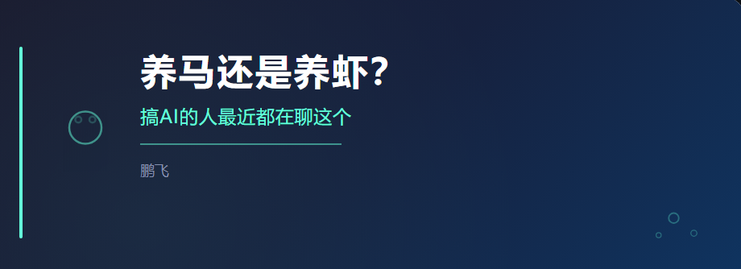

最近圈子里聊一个话题：以前大家“养虾”，现在纷纷开始“养马”。
什么虾什么马？说人话就是——用哪个AI编程助手更好。
先搞清楚谁是谁
现在市面上最火的AI编程助手有四个，很多人容易搞混，我帮你捋清楚：
龙虾（Cline）——最早火起来的开源工具，能接各种模型。但不够成熟，删文件不太谨慎，新功能更新慢。
Claude Code——Anthropic出品，体验最好，代码能力确实强。但只能用自家的模型。
Codex——OpenAI开源，能力上限高。有人说现在 Codex 的体验比 Hermes 还好。代价是贵，且只能用 OpenAI 的模型。
Hermes（爱马仕）——后来开源的，核心卖点就一个：随便换模型。
为什么大家开始“养马”不“养虾”
核心原因一句话：不想被一家公司绑死。
以前用 Cline 或者 Codex，只能吃 OpenAI 的模型。OpenAI 的 API 不是不能用，但贵啊，而且在国内用还需要绕路，不稳定。
Hermes 就不一样了——DeepSeek、通义千问、GPT、Claude……只要对方给你一个 API Key，接上就能用。 在国内直接用 DeepSeek，延迟低、不出墙、还便宜。
一句话总结：虾只能吃一种饲料，饿了也得吃那种；马可以喂草、喂料、喂胡萝卜，你说了算。
那接入微信是怎么回事？
最近听说 Hermes 能接微信了，很多人以为：是不是可以在微信上直接跟它聊天？帮我监控群消息？帮我看账单？
不是的。 它接的是公众号，不是你的个人微信。
能干什么：我写好的文章，它能一键同步到公众号后台当草稿，省掉复制排版的时间。
不能干什么：不能自动回复你朋友的消息，不能看你的微信群，不能读你的微信账单——微信根本没开放这些接口给任何人。
总结一下
养虾还是养马？看你需求：
· 想要省钱、灵活、不被绑定 → 养马（Hermes）
· 想要最强能力、不差钱 → 试试 Codex
· 两者都试试也行，反正工具而已
至于微信那边，别想太美——知道它到底能干什么再决定要不要用。
我是鹏飞，一个把AI当工具用的普通人。觉得有用，下次再聊。
我有一个AI交流的免费社区，想要来的找我，暗号：pf989875